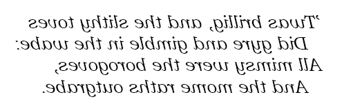

PETZOLD BOOK BLOG
| Recent Entries | ||
| < Previous | Browse the Archives | Next > |
| Subscribe to the RSS Feed |
August 17, 2006
Roscoe, NY
Tim Sneath today has issued a challenge for "the most impressive WPF demo you can construct in a single line of XAML," by which, of course, he means a single element of XAML.
Here's a single-element XAML file that I've formatted into multiple lines for easier human-parsing:
or you can just run or download Jabberwocky.xaml. It's the first verse of "Jabberwocky" as first seen by Alice in the first chapter of Lewis Carroll's Through the Looking-Glass, and What Alice Found There:

As you'll recall, Alice has to hold the poem up to a mirror to read it all. In the XAML the text of the verse includes embedded Unicode characters for line feeds, em-dashes, and the fancy apostrophe. The transform "mini-language" lets a matrix be directly set to the LayoutTransform property to flip the text around the vertical axis.
(c) Copyright Charles Petzold
www.charlespetzold.com